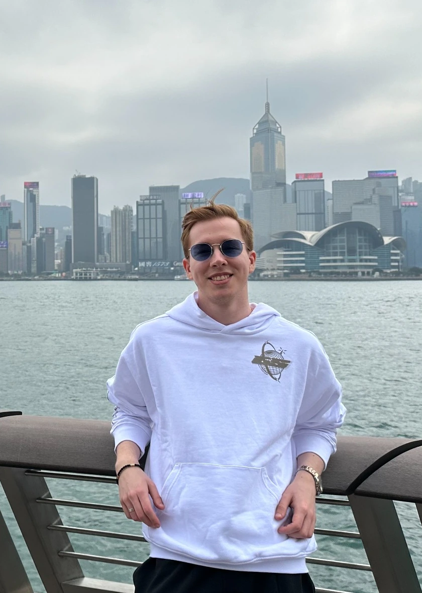

mouse retina+optic nerve×conditions

This is Emil Kriukov
Emil Kriukov
Computational biologist · single-cell atlases · retinal systems
Lead Bioinformatician · University of Pittsburgh
Currently looking for a PhD student position
Discover new targets for
vision restoration.
I want to discover novel therapeutic targets for vision restoration through computational biology — by integrating large-scale single-cell atlases, quantitative modeling, and comparative analysis of retinal and optic-nerve cell states.
01
North star
Eye1k
A pan-conditional mouse atlas of the retina and optic nerve
A unified reference to resolve retinal and optic-nerve cell types and states across development, homeostasis, injury, and neurodegeneration.
Eye1k currently integrates 13 single-cell atlases and is being developed with a consortium-based annotation strategy. The long-term goal is to use cross-condition maps to identify molecular programs and candidate therapeutic targets relevant to vision restoration.
01Mapassemble atlases at scale
→
02Harmonizeresolve shared cell identities
→
03Comparefind condition-linked programs
→
04Discovernominate restoration targets
02
In parallel
Other ongoing projects
METHOD2026 →
scCS
single-cell Commitment Scores
A computational framework for quantitative assessment of cell-fate commitment from single-cell transcriptomic data, designed to describe commitment as a continuous property rather than only a discrete cell label.
Preprint ↗ATLASongoing
HROCA
Human Retinal Organoid Cell Atlas
Ongoing development of a high-resolution single-cell reference for human retinal organoids, with cross-system comparison to in vivo human retinal development and a focus on transcriptional states that emerge or diverge in vitro.
Preprint ↗ACTIVE PAPER2026
NF1 optic glioma
Systems-level single-cell dissection
A systems-level single-cell study of a preclinical murine model of NF1 optic glioma, listed in the CV as in review at Communications Biology.
ACTIVE PAPER2026
Human optic nerve atlas
Integrated single-cell multi-omics
Contributing to an integrated single-cell multi-omics atlas of the human optic nerve, currently listed in the CV as in review at Nature Genetics.
03
Trajectory
Positions, questions, papers
2026 — present
CURRENT
Lead Bioinformatician
University of Pittsburgh
Leading Eye1k, developing scCS, coordinating a five-member bioinformatics team, and supporting computational work across internal and collaborative studies.
Quantitative assessment of cell-fate commitment using scCSbioRxiv · 2026 ↗
NF1 optic glioma at single-cell resolutionCommunications Biology · in review, 2026
Human optic nerve multi-omics atlasNature Genetics · in review, 2026
2022 — 2026
Lead Bioinformatician
Schepens Eye Research Institute of Mass Eye and Ear · Harvard Medical School
Built and analyzed large-scale single-cell atlases of retinal development across in vivo and in vitro systems, with emphasis on retinal ganglion cell specification and maturation. Developed workflows for integration, trajectories, and cross-system comparison across datasets totaling more than three million cells.
Human retinal organoid single-cell atlasbioRxiv · 2025 ↗
Developmental heterogeneity of human retinal ganglion cellsDevelopmental Biology · 2025 ↗
Retinal myeloid response to transplantation of human neuronsiScience · accepted 2026 ↗
Müller glia–microglia cross talk during retina regenerationPNAS · 2026 ↗
DNMT3a suppression and optic-nerve regenerationScience Translational Medicine · in revision, 2026 ↗
Neurotrophic factor co-treatment improves donor and host RGC survivalTVST · 2025 ↗
Improving donor retinal ganglion cell survival through microglia modulationbioRxiv · 2024 ↗
SOCS3 regulates pathological retinal angiogenesis through SPP1Molecular Therapy · 2024 ↗
Controlling donor and newborn neuron migration and maturation in the eyePNAS · 2023 ↗
IGFBPL1, microglia homeostasis, and neuroinflammation in glaucomaCell Reports · 2023 ↗
2021 — 2023
Research Intern
Laboratory of Bone and Cartilage Physiology · Karolinska Institutet
Studied the cartilage stem-cell niche in development and regeneration while developing expertise in light-sheet microscopy, single-cell transcriptomics, RNA velocity, and deep-learning models for microscopy.
2021
Research Intern
Center for Brain Research · Medical University of Vienna
Worked with spatial and single-cell approaches around Schwann-cell progenitor derivatives and adrenal development, including slide-seq2 / merFISH concepts, RNA Scope, advanced microscopy, visualization, and Seurat.
2020
Research Intern
Laboratory of Skeletal Tissues Regeneration · Sechenov University
Worked on mineralized-tissue analysis during regeneration and advanced microscopy, including Lambda, Airyscan, IHC modifications, and whole-mount IHC.
2019
Research Intern
Laboratory of Developmental Biology and Regenerative Medicine · Karolinska Institutet
Worked on neural-crest development and neuroblastoma biology while developing hands-on experience in confocal microscopy, cryotomy, and immunohistochemistry.
2019 — 2021
Student Researcher
Institute of Experimental Oncology and Biomedical Technologies · Nizhny Novgorod
Early research spanning tumor metabolism and chemoresistance, neural-crest derivatives, tumor stem cells, transplantation biology, and the regenerative potential and metabolism of the growth-plate stem-cell niche.
04
Teaching
Mentoring, courses, workshops
MENTORING2023 → present
Research mentoring
Computational biology training across career stages
I enjoy mentoring people at very different stages, from high-school students to postdocs, especially around single-cell analysis, computational thinking, and research design.
- Sergio Pestun — High School Student (2023)
- Sthavir Vinjamuri — College Student (2024–2025)
- Everett Labrecque — High School / College Student (2024–present)
- Chieh-Yu Lin — Master’s Student (2025–present)
- Anil Upreti — Postdoc (2025–2026)
COURSES + WORKSHOPShands-on teaching
Lectures and training programs
From formal coursework to practical workshop teaching
- Lecturer at the Master’s program Bioinformatics: Single-cell multiomics — Tomsk National Research Medical Center
- Organized and hosted bioinformatics workshops on single-cell RNA-seq analysis at Belgrade University (14 people) and the Institute for Biological Research “Siniša Stanković” (5 people)
- Organiser of BNV Lab Summer School 2025
05
Side quests
Hobby projects
CURRENT BIOLOGY2023
The parasite story
Polymorphic parasitic larvae that cooperate as a swimming colony
A collaboration outside my main retinal work: two morphologically and functionally distinct cercarial forms cooperate to build a swimming aggregate proposed to aid host infection — a striking example of division of labor in a parasite.
Current Biology ↗CELL2025
Axolotl regeneration
Body-wide and local responses to amputation
A large collaborative regeneration project showing that adrenergic signaling coordinates systemic stem-cell activation with local limb-regeneration responses after amputation in axolotl.
Cell ↗
06
Methods
Computational toolbox
Single-cell at scale
Scanpy · Seurat · RAPIDS-singlecell · Cell Ranger · scVI · scArches · scPoli
Fate & dynamics
RNA velocity · CellRank · PAGA · Monocle3 · Slingshot · CytoTRACE · scFates
Networks & interaction
SCENIC · CellChat · gene-regulatory networks · cell-cell communication
GPU + ML
PyTorch · JAX · Ray · cuML · RAPIDS · large-scale integration and predictive modeling
Next step
I am currently looking for a PhD student position.
I am happy to discuss PhD opportunities, research collaborations, atlas integration, single-cell methods, and computational approaches to vision restoration.